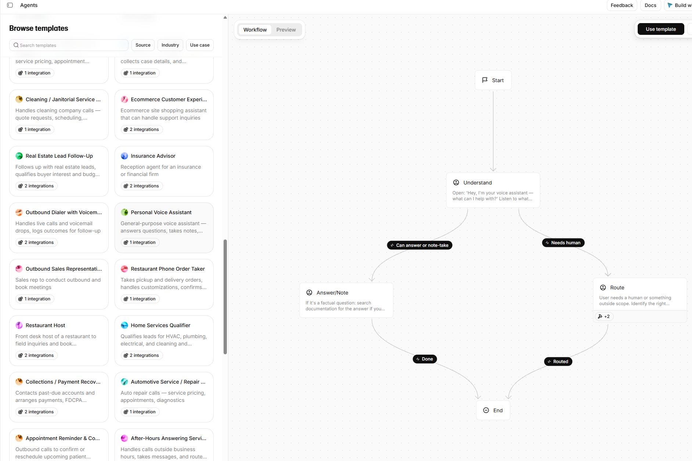

Wi-Fi now. The two ElevenLabs lines can wait until stage 04.
Every project reads this one file
The references and your own work in my-work/ all find it. Edit once.
Three rules
Git ignores it. Do not force it in.
Do not paste it into a chat.
Do not open it while your screen is shared.
Tell the harness too
"Never read or print secrets.h" belongs in your prompts. The repo's CLAUDE.md already says it.
Stage 01 First upload
01
A language model on a microcontroller
No network. No server. 28.9 million parameters on a chip the size of a postage stamp.
Stage 01 What is going on inside
Where do you put a model on a chip?
Memory
Size
What lives there
Flash
16 MB
The 15 MB model, in its own partition, read in place. One row of a huge table per token.
PSRAM
8 MB
The small transformer core, unpacked at boot. The attention cache.
SRAM
512 KB
The hot working set, touched many times per token.
Placement follows how often each byte is read. Fast memory is scarce, so only the busiest data gets it.
28.9 Mparameters, 4 bits each
~5.5tokens per second, both cores working
0bytes sent to any server
Stage 01 Flash it
Two uploads: the model, then the app
cd "Reference Implementations/01-story-app"
# once: 15 MB, about two minutes
pio run -t upload_model
pio run -t upload
A story streams onto the screen. Tap the screen for a new one. The bar at the top shows tokens per second.
Done when
A story is scrolling
Tapping starts a new one
"model partition not found"?
The model upload did not run or did not finish. Run upload_model again.
Stage 01 Your first change
Now make it yours, with Claude Code
In the 01-story-app folder:
claude
Then ask for one small thing. For example:
In src/main.cpp, make the status bar show how many tokens have been generated so far, next to the tokens-per-second figure. Keep the change small, rebuild and flash it.
Other ideas
Change the colours or the text size
Set the temperature to 0. What happens to the stories?
Add a starting prompt of your own
Ask it to explain how one token gets generated
Watch what it does
It reads the code, edits, builds, flashes, then reads the serial log to check itself. That is the loop.
Working with the harness
Five habits that pay off today
Describe the outcome, not the code. "A button that starts recording", not "call the mic API".
Say how to test it. "Add a serial key for each button and check it over serial."
Report what you see. "The text overwrites itself at the bottom" beats "it's broken".
Keep changes small. One feature, flash, look. Then the next.
Write down what you learn. When you find a hardware quirk, have it added to CLAUDE.md so it is never rediscovered.
And one for your wallet: the harness is fast and confident. It is not always right. Flash it and look before you believe it.
Break
15 minutes
Back at the time on the clock. Ahead of the room? Carry on into stage 02.
Stage 02 Wi-Fi and touch UI
02
Build your own harness
A status bar, a scrolling log and buttons. You will keep adding to it for the rest of the day.
Stage 02 What to build
Describe it. Let the harness build it.
From the top folder of the repo:
claude
Paste the prompt from starter-prompts/02-wifi-and-ui.md, or write your own. It asks for:
A status bar, a scrolling log, a row of touch buttons
WiFi: connect and disconnect, show the IP
Test: an HTTPS request, logged with its status and time
Clear, and a serial key for every button
Your project lands in my-work/02-harness.
Done when
WiFi connects and the IP shows in the bar
Test logs an HTTP status (404 or 401 is a pass)
Disconnect works
The log scrolls instead of overwriting itself
You made one change of your own
Stage 02 Wrinkles you may have just met
Three things the compiler never told you
The log writes over itselfPrinting straight to the display wraps back to the top. Draw text into an off-screen canvas with scrolling on, then push it to the screen.
A button you cannot seePure blue is nearly black on this panel, though a camera sees it fine. Pick colours for the hardware, and look at the device.
"Program too big"Wi-Fi plus TLS is about 1.5 MB. It does not fit beside the story model. Stages 02 onward use the standard partition layout.
"Port is busy"A serial monitor left open holds the port, so the upload fails. Close the monitor, or let the harness manage the port.
None of these is a code error. The build was green every time. You only find them by flashing and looking.
Stage 03 Voice recorder
03
Sound in, sound out
Record from the microphones to the SD card and play it back. The plumbing the assistant needs.
Stage 03 What to build
Add Rec and Play to your harness
Same claude session, or a fresh one from the top folder. Use starter-prompts/03-voice-recorder.md or your own words:
Start from a copy of your stage 02 project
Rec / Stop: 16 kHz mono WAV into a recordings folder on the SD card
A timer and a live level meter while recording
Play: the latest recording through the speaker
Serial keys r, p, l to record, play and list
Done when
A recording is on the card
It plays back and you can understand it
The meter moves when you speak
You made one change of your own
Listen critically. Is it clean, or is there a crackle? Is the pitch right? Tell the harness exactly what you hear.
Stage 03 Wrinkles in sound
Why did it crackle?
The speaker does not copy your samplesYou hand it a buffer and it plays from that memory later. Refill the buffer too soon and you overwrite sound that is still waiting to play. Use three buffers and wait for a free slot.
One audio bus, two devicesThe mic and the speaker share it. Only one can be running. End one before you begin the other.
The pattern
A library call that looked harmless had a rule nobody wrote in the function name. The harness guessed, and guessed wrong, with total confidence.
What fixed it
A human said "it crackles". The harness then read the library source and found the rule. Your ears were the test.
Stage 04 Voice assistant
04
Talk to it. It talks back.
A live spoken conversation between your CoreS3 and an ElevenLabs agent.
Stage 04 How a conversation flows
One WebSocket, audio both ways
Microphone16 kHz audio in 128 ms chunks
→base64 JSON
WebSocketone secure connection, kept open
→
ElevenLabs agenthears, thinks, speaks
Speakerplays from a buffer in PSRAM
←audio
WebSocketreplies arrive faster than real time
←
ElevenLabs agentalso sends the transcript
Half-duplex
One audio bus, so the mic is off while the agent speaks. No interrupting.
The agent decides turns
You just keep streaming. It works out when you have finished.
Ping, pong
The server checks you are alive. No reply, no conversation.
Stage 04 Make an agent
Your agent, in your ElevenLabs account
Sign in at elevenlabs.io and open Agents.
Browse templates → Personal Voice Assistant → Use template. Skip the Zendesk step.
Try it in the browser Preview first.
Agent id: on the Agents list, the … menu → Copy agent JSON config. The id is at the top and starts agent_.
API key: profile menu → API Keys → create one. Copy it now; it is shown once.
Put both in secrets.h.

The template to pick.
Stage 04 Mind your credits
A conversation costs money while it is open
~1,000credits a minute
A free account has 10,000 a month. That is about ten minutes of talking, whether or not anyone is speaking.
The firmware looks after you
The status bar counts the seconds
Ends after 20 seconds of nobody speaking
No conversation runs past 90 seconds
You look after you
Short, deliberate conversations
Tap End when you are done
Ran out? Hand up. There is a spare.
Stage 04 Run it
Say hello
cd "Reference Implementations/04-assistant"
pio run -t upload
Tap Talk. It joins Wi-Fi, connects, and the agent greets you.
Bar says LISTEN: speak. Bar says AGENT: it is talking.
Your words and its reply appear in the log.
Tap End, or just say goodbye.
Want to build it yourself instead? The prompt is in fallback-prompts/04-voice-assistant.md.
Done when
You have had a spoken conversation
You changed one thing
Change one thing
The agent's voice or personality (no reflash)
Show the conversation length on screen
Save the transcript to the SD card
Tap to interrupt the agent
Stage 04 The wrinkle that needed new code
The library everyone uses said no
The agent sends its voice in messages of hundreds of kilobytes.
The most popular Arduino WebSocket library refuses anything over 15 KB, with no setting to change it.
The connection opened. The greeting never played. Nothing in the build warned us.
What we did
Had the harness write a small WebSocket client of our own, about 150 lines, that keeps big messages in PSRAM. It is ws_client.h in the stage 04 folder.
What to take from it
"Use the standard library" is the right first move and sometimes the wrong last one. Reading a dependency's source is cheap now. Ask for it.
Stage 05 Stretch
05
It listens. It acts.
Wake on sound without burning credits, and let the agent run code on your device.
Stage 05 Two ideas
Wait locally. Connect late. Give it hands.
Auto mode
An open conversation costs credits even in silence. So the device listens by itself, with a simple loudness check, and only connects when it hears you.
Tap Auto. Speak above the red line.
It connects, the agent greets you.
Afterwards it goes back to waiting.
Client tools
The agent can call functions that run on the device. It sends a name, your code runs, the result goes back for it to talk about.
start_recording
Record the conversation to SD
stop_recording
Stop and save
get_device_status
Battery, Wi-Fi, uptime
cd "Reference Implementations/05-always-listening" && pio run -t upload
Stage 05 Add a tool of your own
A tool is a name, a few lines, and a sentence
On the device
Find runTool() in src/main.cpp. Match the name, do the thing, return a short sentence the agent can read out.
Add a client tool called set_screen_color with a string parameter "color". Fill the log area with that colour for two seconds and return a short sentence. Then tell me exactly what to enter for the matching tool on my ElevenLabs agent.
On the agent
Agent → Tools → Add Tool → type Client
The name must match exactly, including case
Tick Wait for response so the agent hears the result
Write the description as an instruction: when should it call this?